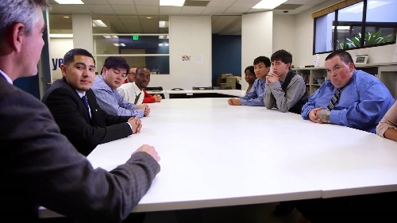

Home Login Page Year Up Bay Area Year Up & QA More About QA


Year Up is a non-profit organization that provides a program for urban youth from low income backgrounds to gain access to opportunities to work in Fortune 500 tech companies.
Year Up Bay Area is a division of Year Up with locations in San Francisco and Silicon Valley. Some of YUBA's corporate partners include: Salesforce, LinkedIn, Airbnb, and Yelp.
Within Year Up's intense program, trainees gain college credit from courses such as Business Communication, Business Writing, Computer Science, Web Development, and Networking. These courses are learned through the Learning and Development Phase. Depending on the students' preference, they will then get placed into a specific track. The different tracks currently offered at Year Up for this cohort are: IT, CyberSecurity, Project Coordination, Quality Assurance, and Networking.
Students learn the hard skills needed for typical jobs within tech companies in the Learning and Development phase. However, this phase is broken up into three subphases, called Mods I, II, and III.
After the L & D Phase, students then transition into a six month internship with a company selected by Year Up's Internship Placement Team. After internship is completed, the Year Up student graduates!
